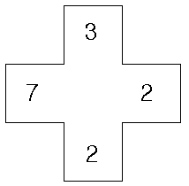
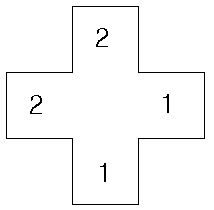

위와 같은 십자모양의 한 장의 카드에서, 네 모서리에 1 이상 9 이하의 숫자가 하나씩 씌여 있다. 이 네 개의 숫자 중에는 같은 숫자도 있을 수 있다.
모든 가능한 십자 카드가 주어질 때, 각각의 카드는 다음과 같은 '시계수'라는 번호를 가진다. 시계수는 카드의 숫자들을 시계 방향으로 읽어서 만들어지는 네 자리 수들 중에서 가장 작은 수이다. 위 그림의 카드는 시계방향으로 3227, 2273, 2732, 7322로 읽을 수 있으므로, 이 카드의 시계수는 가장 작은 수인 2273이다.
입력으로 주어진 카드의 시계수를 계산하여, 그 시계수가 모든 시계수들 중에서 몇 번째로 작은 시계수인지를 알아내는 프로그램을 작성하시오.
예를 들어서, 다음과 같은 십자 카드의 시계수는 1122이며, 이 시계수보다 작은 시계수들은 1111, 1112, 1113, 1114, 1115, 1116, 1117, 1118, 1119 뿐이므로 1122는 10번째로 작은 시계수다. (여기서 십자카드는 0 이 나타날 수 없으므로 1120은 시계수가 될 수 없다. 또한 1121 이 적혀있는 카드의 시계수는 1112이므로, 1121은 시계수가 될 수 없다.

입력은 한 줄로 이루어지며, 이 한 줄은 카드의 네 모서리에 씌여있는 1 이상 9 이하의 숫자 4개가 시계 방향으로 입력된다. 각 숫자 사이에는 빈칸이 하나 있다.
입력된 카드의 시계수가 모든 시계수들 중에서 몇 번째로 작은 시계수인지를 출력한다.
Input:
2 1 1 2
Output:
10